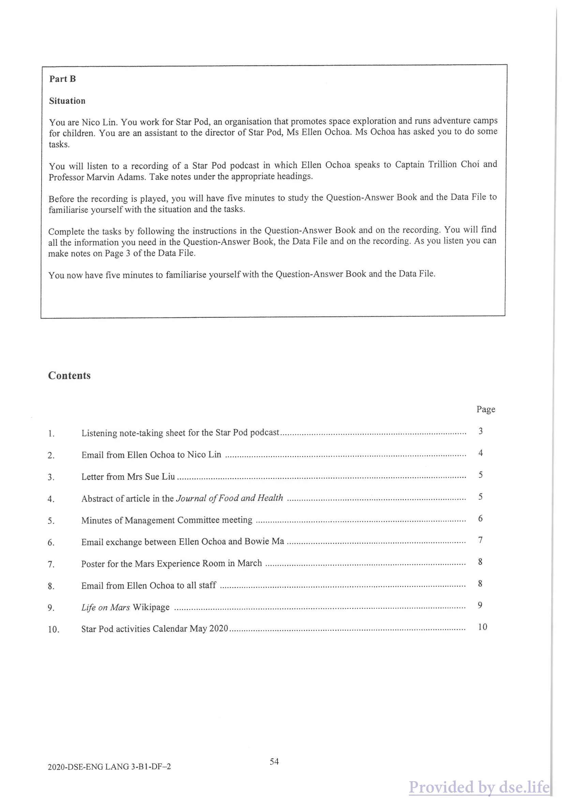
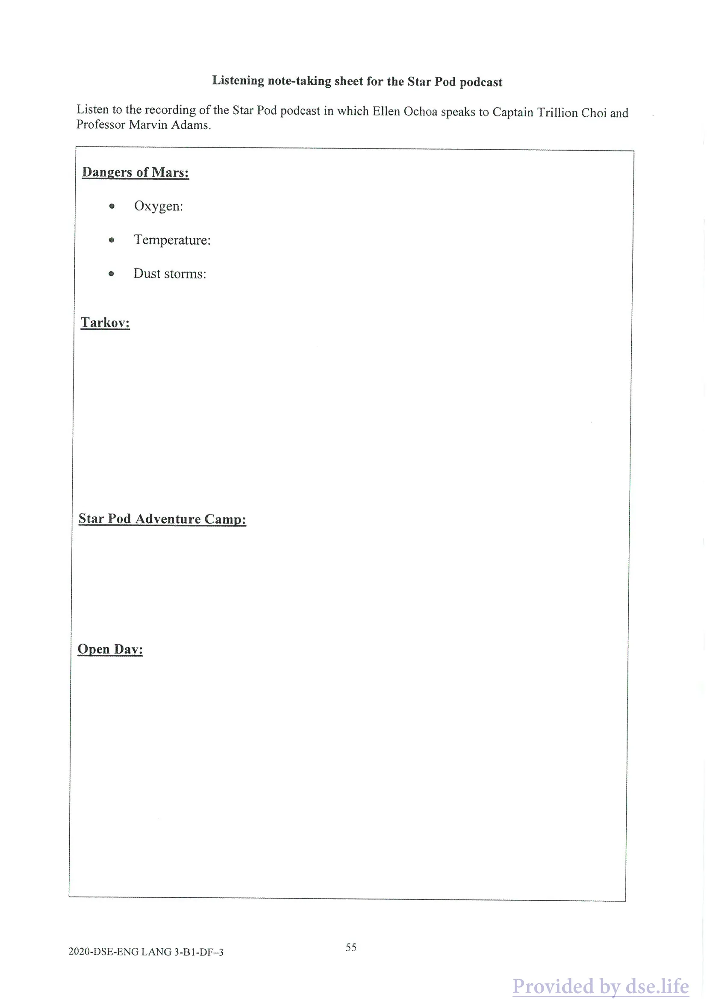
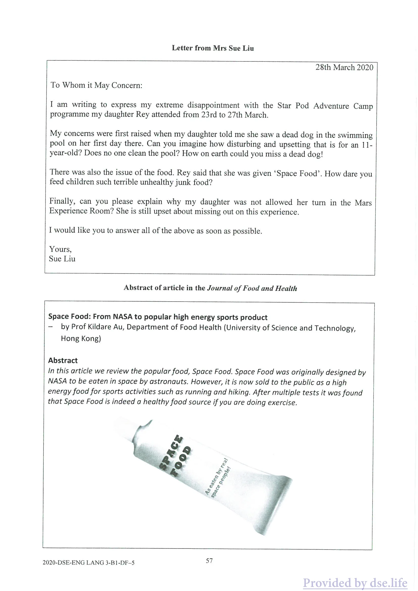
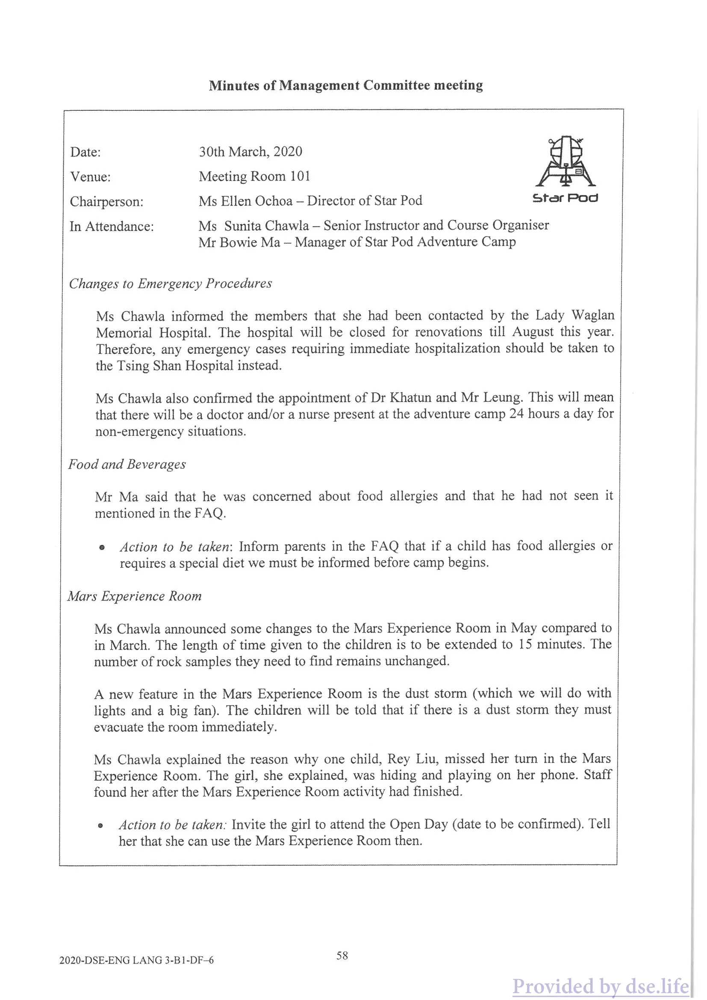
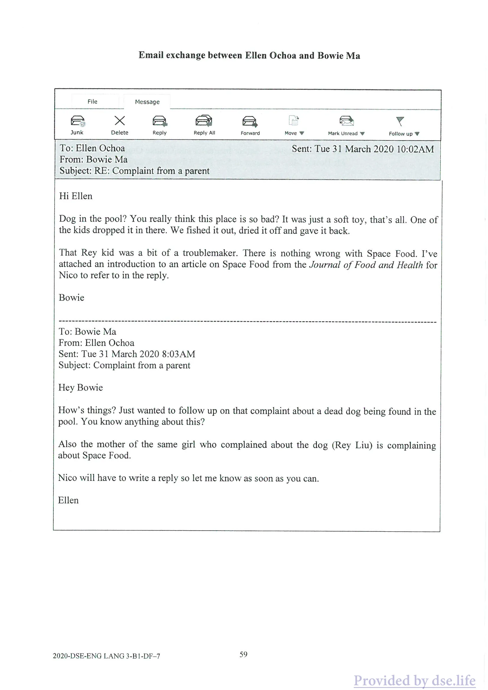
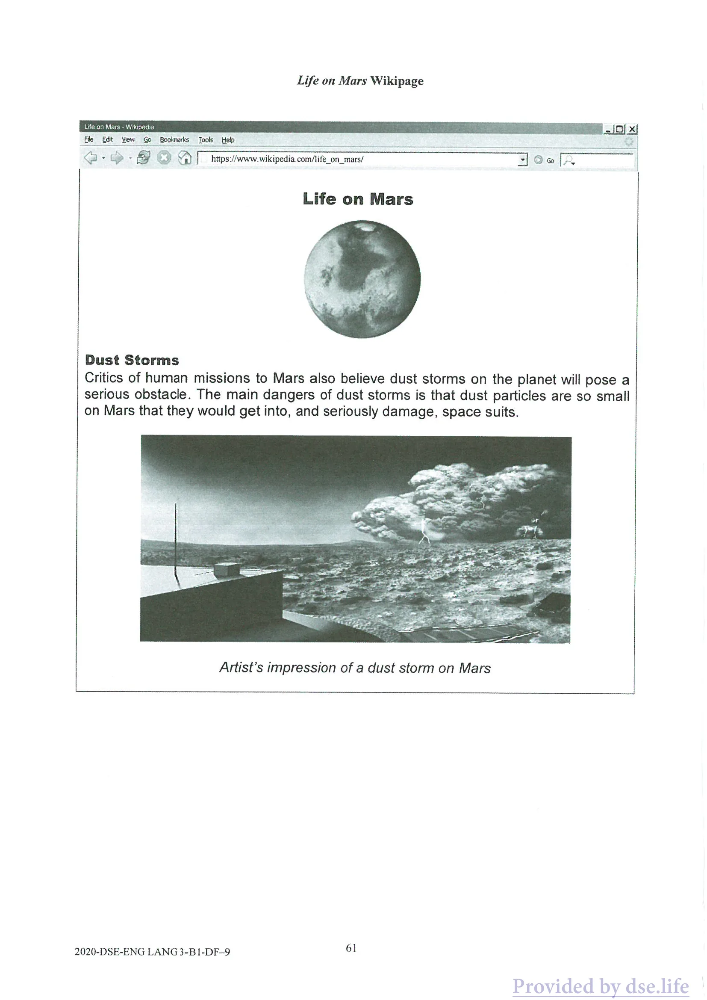

HONG KONG DIPLOMA OF SECONDARY EDUCATION EXAMINATION 2020
ENGLISH LANGUAGE PAPER 3
PART Bt
DATA FILE
GENERAL INSTRUCTIONS
(1) Refer to the General Instructions on Page 1 of the Question-Answer Book for Part A.
INSTRUCTIONS FOR PART B1
(1) The Question-Answer Book for Part B1 is inserted into this Data File. (2) For Part B, attempt EITHER those tasks in Part B1 (Tasks 5 — 7) OR those in Part B2 (Tasks 8 - 10). (3) You are advised to use a pen for Part B. (4) The Data Files will NOT be collected at the end of the examination. Do NOT write your answers in the Data Files.
(5) Hand in only ONE Question-Answer Book for Part B, either B1 or B2, and tie it with the Question- Answer Book for Part A.
Not to be taken away before the end of the examination session
You are Nico Lin. You work for Star Pod, an organisation that promotes space exploration and runs adventure camps for children. You are an assistant to the director of Star Pod, Ms Ellen Ochoa. Ms Ochoa has asked you to do some tasks.
You will listen to a recording of a Star Pod podcast in which Ellen Ochoa speaks to Captain Trillion Choi and Professor Marvin Adams. Take notes under the appropriate headings.
Before the recording is played, you will have five minutes to study the Question-Answer Book and the Data File to familiarise yourself with the situation and the tasks. Complete the tasks by following the instructions in the Question-Answer Book and on the recording. You will find all the information you need in the Question-Answer Book, the Data File and on the recording. As you listen you can make notes on Page 3 of the Data File.
You now have five minutes to familiarise yourself with the Question-Answer Book and the Data File.
Contents
Page
1. Listening note-taking sheet for the Star Pod podcast — 3 2. Email from Ellen Ochoa to Nico Lin — 4
3. Letter from Mrs Sue Liu 5
4. Abstract of article in the Journal of Food and Health — 5
3. Minutes of Management Committee meeting — 6 6. Email exchange between Ellen Ochoa and Bowie Ma — 7 7. Poster for the Mars Experience Room in March — 8 8. Email from Ellen Ochoa to all staff — 8
9. Life on Mars Wikipage .. 9 10. Star Pod activities Calendar May 2020 — 10
2020-DSE-ENG LANG 3-B1-DF-2

原卷版面 · 圖表、照片及留白依原頁保留
中文對照
B部分 情況 你是林妮可。您在 Star Pod 工作，這是一個促進太空探索並為兒童舉辦冒險營的組織。你是 Star Pod 總監 Ellen Ochoa 女士的助理。奧喬亞女士要求您完成一些任務。 您將收聽 Star Pod 播客的錄音，其中艾倫·奧喬亞 (Ellen Ochoa) 與 Trillion Choi 船長和馬文·亞當斯 (Marvin Adams) 教授交談。在適當的標題下做筆記。 在播放錄音之前，您將有五分鐘的時間學習問答書和資料文件，以熟悉情況和任務。按照問答簿和錄音中的說明完成任務。您可以在問答簿、資料檔案和錄音中找到所需的所有資訊。當您聆聽時，您可以在資料檔案的第 3 頁上做筆記。 您現在有五分鐘的時間來熟悉問答書和資料檔。 內容 頁面 1. Star Pod 播客的聽力筆記表 — 3 2. Ellen Ochoa 給 Nico Lin 的電子郵件 — 4 3. 劉蘇女士的來信 5 4.《食品與健康雜誌》文章摘要 — 5 3. 管理委員會會議紀錄 — 6 6. Ellen Ochoa 與 Bowie Ma 的電子郵件交流 — 7 7. 3 月火星體驗室海報 — 8 8. Ellen Ochoa 致全體員工的電子郵件 — 8 9. 火星生命維基頁面.. 9 10. 星莢活動日曆 2020 年 5 月 — 10 2020-DSE-ENG LANG 3-B1-DF-2
Data File · 原卷第 20 頁
可選取的英文文字
Listening note-taking sheet for the Star Pod podcast Listen to the recording of the Star Pod podcast in which Ellen Ochoa speaks to Captain Trillion Choi and Professor Marvin Adams.
Dangers of Mars:
e Oxygen:
e Temperature:
e Dust storms:
Tarkov:
Star Pod Adventure Camp:
Open Day:
2020-DSE-ENG LANG 3-B1-DF-3 45

原卷版面 · 圖表、照片及留白依原頁保留
中文對照
Star Pod 播客的聽力筆記表 收聽 Star Pod 播客的錄音，其中 Ellen Ochoa 與 Trillion Choi 船長和馬文·亞當斯 (Marvin Adams) 教授交談。 火星的危險： e 氧氣： e 溫度： e 沙塵暴： 塔科夫： 星莢冒險營： 開放日： 2020-DSE-ENG LANG 3-B1-DF-3 45
I need you to help me with a few things this week.
First, I want you to write the script for an instruction video for the Mars Experience Room — where kids go into a room and pretend they are exploring Mars. This instruction video will be shown to them before they go into the Mars Experience Room. In the video script, you need to explain to the children: e that they need to put on the space suit e the reasons why they have to wear a space suit on Mars e what the objective of the activity is e what they should do in a dust storm and why.
Look at the Mars Experience Room Poster from March, the minutes from the latest Management Committee meeting, the Life on Mars Wikipage I sent you and listen to what Captain Trillion Choi says about Mars in our podcast.
Next, I would like you to write a response to the complaint letter we received from a Mrs Sue Liu about her daughter’s experience at the camp at Star Pod. Look at the minutes from the latest Management Committee meeting, my email correspondence with Bowie as well as some information Bowie sent me on Space Food from the Journal of Food and Health. Listen to the podcast for the confirmed date of the Open Day.
Finally, can you finish the FAQ (Frequently Asked Questions) for the Star Pod website? Have a look at the details from the Star Pod calendar, the email I wrote to all staff and the minutes from the latest Management Committee meeting. You could listen to the podcast as well. Try to make the answers in complete sentences to make them clear and informative.
Your countdown for getting these done starts now! Ten, nine, eight
I am writing to express my extreme disappointment with the Star Pod Adventure Camp programme my daughter Rey attended from 23rd to 27th March.
My concerns were first raised when my daughter told me she saw a dead dog in the swimming pool on her first day there. Can you imagine how disturbing and upsetting that is for an 11- year-old? Does no one clean the pool? How on earth could you miss a dead dog! There was also the issue of the food. Rey said that she was given ‘Space Food’. How dare you feed children such terrible unhealthy junk food?
Finally, can you please explain why my daughter was not allowed her turn in the Mars Experience Room? She is still upset about missing out on this experience. I would like you to answer all of the above as soon as possible.
Yours, Sue Liu
Abstract of article in the Journal of Food and Health
Space Food: From NASA to popular high energy sports product — by Prof Kildare Au, Department of Food Health (University of Science and Technology, Hong Kong)
Abstract In this article we review the popular food, Space Food. Space Food was originally designed by NASA to be eaten in space by astronauts. However, it is now sold to the public as a high energy food for sports activities such as running and hiking. After multiple tests it was found that Space Food is indeed a healthy food source if you are doing exercise.
2020-DSE-ENG LANG 3-B1-DF-5 57

原卷版面 · 圖表、照片及留白依原頁保留
中文對照
劉蘇女士的來信 2020 年 3 月 28 日 可能涉及的人： 我寫這封信是為了表達我對我女兒 Rey 3 月 23 日至 27 日參加的 Star Pod Adventure Camp 專案的極度失望。 當我女兒告訴我她在游泳池裡看到一隻死狗時，我第一次感到擔憂。你能想像這對 11 歲的孩子來說是多麼令人不安和不安嗎？沒人打掃泳池嗎？你到底怎麼會錯過一隻死狗呢！還有食物的問題。雷伊說她得到了“太空食物”。你怎麼敢給孩子吃這麼可怕的不健康的垃圾食物？ 最後，您能解釋為什麼我女兒不被允許進入火星體驗室嗎？她仍然為錯過這次經歷而感到難過。我希望您盡快回答以上所有問題。 你的，蘇劉 《食品與健康期刊》文章摘要 太空食品：從 NASA 到流行的高能量運動產品 — 作者：Kildare Au 教授，食品健康學系（香港科技大學） 摘要 在這篇文章中，我們回顧了流行的食物—太空食品。太空食品最初是由美國宇航局設計的，供太空人在太空中食用。然而，它現在作為跑步和徒步旅行等體育活動的高能量食品向公眾出售。經過多次測試發現，如果你在運動的話，太空食品確實是一種健康的食物來源。 2020-DSE-ENG LANG 3-B1-DF-5 57
Data File · 原卷第 23 頁
可選取的英文文字
Minutes of Management Committee meeting
Date: 30th March, 2020 Venue: Meeting Room 101 Chairperson: Ms Ellen Ochoa — Director of Star Pod Ster Pod In Attendance: Ms Sunita Chawla — Senior Instructor and Course Organiser Mr Bowie Ma — Manager of Star Pod Adventure Camp
Changes to Emergency Procedures
Ms Chawla informed the members that she had been contacted by the Lady Waglan Memorial Hospital. The hospital will be closed for renovations till August this year. Therefore, any emergency cases requiring immediate hospitalization should be taken to the Tsing Shan Hospital instead.
Ms Chawla also confirmed the appointment of Dr Khatun and Mr Leung. This will mean that there will be a doctor and/or a nurse present at the adventure camp 24 hours a day for non-emergency situations.
Food and Beverages
Mr Ma said that he was concerned about food allergies and that he had not seen it mentioned in the FAQ.
e Action to be taken: Inform parents in the FAQ that if a child has food allergies or requires a special diet we must be informed before camp begins.
Mars Experience Room
Ms Chawla announced some changes to the Mars Experience Room in May compared to in March. The length of time given to the children is to be extended to 15 minutes. The number of rock samples they need to find remains unchanged.
A new feature in the Mars Experience Room is the dust storm (which we will do with lights and a big fan). The children will be told that if there is a dust storm they must evacuate the room immediately.
Ms Chawla explained the reason why one child, Rey Liu, missed her turn in the Mars Experience Room. The girl, she explained, was hiding and playing on her phone. Staff found her after the Mars Experience Room activity had finished.
e Action to be taken: Invite the girl to attend the Open Day (date to be confirmed). Tell her that she can use the Mars Experience Room then.
2020-DSE-ENG LANG 3-B1-DF-6 58

原卷版面 · 圖表、照片及留白依原頁保留
中文對照
管理委员会会议纪要 日期：2020年3月30日 地點：101會議室 主席：Ellen Ochoa女士 — Star Pod Ster Pod總監 出席人員：Sunita Chawla女士 — 高級教練兼課程組織者 Mr Bowie Ma — Star Pod探險營經理 緊急程序的變更 Chawla 女士告訴成員，瓦格蘭夫人紀念醫院已與她聯繫。該醫院將關閉進行翻修，直至今年八月。因此，如有緊急情況需要立即住院，應轉往青山醫院。 Chawla 女士也確認了 Khatun 博士和 Leung 先生的任命。這意味著冒險營每天 24 小時都有一名醫生和/或護士在場，以應對非緊急情況。 食品和飲料 馬先生表示，他擔心食物過敏，但在常見問題中沒有看到提及。 e 應採取的行動：在常見問題中告知家長，如果孩子有食物過敏或需要特殊飲食，我們必須在夏令營開始前通知我們。 火星體驗室 Chawla 女士宣布，與 3 月相比，5 月火星體驗室發生了一些變化。给孩子们的时间延长到15分钟。他們需要尋找的岩石樣本數量保持不變。 火星體驗室的一個新功能是沙塵暴（我們將使用燈光和大風扇來實現）。孩子們將被告知，如果發生沙塵暴，他們必須立即撤離房間。 Chawla 女士解釋了孩子 Rey Liu 錯過火星體驗室的原因。她解釋說，那個女孩正在躲起來玩手機。火星體驗室活動結束後，工作人員找到了她。 e 應採取的行動：邀請女孩參加開放日（日期待定）。告訴她，到時候可以使用火星體驗室。 2020-DSE-ENG LANG 3-B1-DF-6 58
Data File · 原卷第 24 頁
可選取的英文文字
Email exchange between Ellen Ochoa and Bowie Ma
File Message e x Aa AB B ’ & v Junk Delete Reply Reply All Forward Move W Mark Unread W Follow up W To: Ellen Ochoa Sent: Tue 31 March 2020 10:02AM From: Bowie Ma
Subject: RE: Complaint from a parent
Hi Ellen
Dog in the pool? You really think this place is so bad? It was just a soft toy, that’s all. One of the kids dropped it in there. We fished it out, dried it off and gave it back.
That Rey kid was a bit of a troublemaker. There is nothing wrong with Space Food. I’ve attached an introduction to an article on Space Food from the Journal of Food and Health for Nico to refer to in the reply.
Bowie
To: Bowie Ma From: Ellen Ochoa Sent: Tue 31 March 2020 8:03AM
Subject: Complaint from a parent
Hey Bowie
How’s things? Just wanted to follow up on that complaint about a dead dog being found in the pool. You know anything about this?
Also the mother of the same girl who complained about the dog (Rey Liu) is complaining about Space Food.
Nico will have to write a reply so let me know as soon as you can.
Ellen
2020-DSE-ENG LANG 3-B1-DF-7 59

原卷版面 · 圖表、照片及留白依原頁保留
中文對照
Ellen Ochoa 和 Bowie Ma 之間的電子郵件交換 文件訊息 e x Aa AB B ’ & v 垃圾郵件 刪除回覆 回覆全部 轉寄 W 標記為未讀 W 跟進 W 收件者：Ellen Ochoa 寄件者：2020 年 3 月 31 日星期二上午 10:02 寄件者：Bowie Ma 主題：回覆：家長的投訴 嗨艾倫 泳池裡有狗嗎？你真的覺得這個地方很糟嗎？這只是一個毛絨玩具，僅此而已。一個孩子把它掉在那裡了。我們把它撈出來，曬乾，然後還給我們。 那個雷伊小子有點惹麻煩。太空食品沒有任何問題。我附上了《食品與健康雜誌》上一篇關於太空食品的文章的介紹，供Nico在回復中參考。 鮑伊 收件者：Bowie Ma 寄件者：Ellen Ochoa 寄件時間：2020 年 3 月 31 日星期二 8:03AM 主題：家長投訴 嘿鮑伊 怎麼樣？只是想跟進在游泳池中發現一隻死狗的投訴。你知道這件事嗎？ 同樣抱怨狗的女孩（劉蕾飾）的母親也在抱怨太空食品。 尼科必須寫一封回复，所以請盡快告訴我。 艾倫 2020-DSE-ENG LANG 3-B1-DF-7 59
I thought I would send you all a quick email to share with you some exciting news. The Adventure Camps have been such a success that we are going to expand our operations. That means that we are going to expand from two camps a year to four. We are going to give them the names March, May, August and November Adventure Camps.
We will be continuing at our Sai Kung camp site for the foreseeable future, I’m afraid. As you know, we were hopeful that we would be able to move venues to Cheung Chau but that will now not be happening.
However, we are also going to increase our capacity for each camp from the present 40 children (8 in each of the 5 dormitories) to 50 children (10 in each dormitory). It’ll be a bit crowded but I think we can squeeze them in.
Dust Storms Critics of human missions to Mars also believe dust storms on the planet will pose a serious obstacle. The main dangers of dust storms is that dust particles are so small on Mars that they would get into, and seriously damage, space suits.
Artist’s impression of a dust storm on Mars
2020-DSE-ENG LANG 3-BI-DF-9 61

原卷版面 · 圖表、照片及留白依原頁保留
中文對照
火星生命維基頁面 沙塵暴 對人類火星任務的批評者也認為，沙塵暴將對地球造成嚴重的障礙。沙塵暴的主要危險在於火星上的塵埃顆粒非常小，以至於它們會進入並嚴重損壞太空衣。 藝術家對火星沙塵暴的想像 2020-DSE-ENG LANG 3-BI-DF-9 61
Data File · 原卷第 27 頁
可選取的英文文字
Star Pod activities Calendar May 2020 May 2020 Mon Tue Wed Thurs Fri Sat Sun
1 Z 3 Public Holiday 4 5 6 7 8 9 10
11 12 13 14 15 16 17 Star Pod | Star Pod Star Pod Star Pod Star Pod Camp Camp Camp Camp Camp Indoor |Indoor || Indoor | J Indoor [Indoor | activity activity activity activity activity Space Suit | Mars Mars Space Multi-Axis Walk Experience | Experience | Capsule Trainer Room Room
Sources of materials used in this paper will be acknowledged in the HKDSE Question Papers booklet published by the Hong Kong Examinations and Assessment Authority at a later stage.
Candidate Number Please stick the barcode label here.
HKDSE 2020
ENGLISH LANGUAGE
PAPER 3 PART B1 Question-Answer Book
EASY SECTION
Task 5: Instruction Video Script (18 marks) Write a script for the Mars Experience Room instruction video. Use the information in the B1 Data File and your own notes. Write around 100 words.